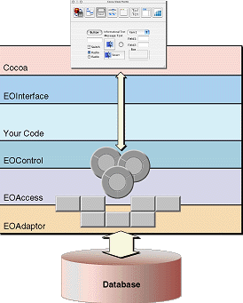
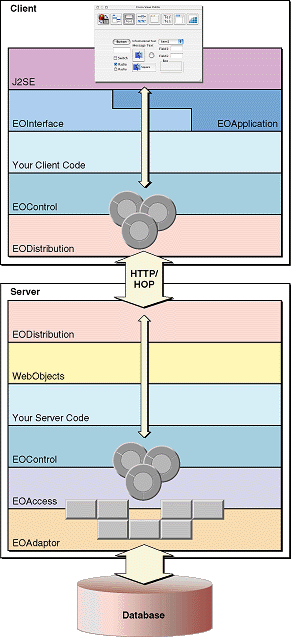

| PATH |

A Java Client application is essentially an Enterprise Objects Framework application distributed across an application server (running a WebObjects application) and one or more client applications or applets. As a starting point, consider the diagram in Figure 1-1, which depicts a traditional desktop Enterprise Objects Framework application.
Figure 1-1 Architecture of traditional Enterprise Objects Framework application
In this architecture, data is fetched from databases through the EOAdaptor layer, objects of which (adaptors) interact with specific database servers. The EOAccess layer creates enterprise objects from the raw fetched data and registers these with the EOControl layer; the access layer, through EOModel and related classes, also provides a mapping between the database schema and enterprise objects. The EOControl layer manages a graph of enterprise objects, tracks changes to them, and directs the access layer to commit changes to those objects. Finally, the EOInterface layer in this traditional desktop application synchronizes the data displayed in the user interface-here objects of the Cocoa framework-with the EOControl layer's graph of enterprise objects.
The design of Java Client breaks up some of these layers and redistributes them across the client and the application server, which occupies the middle tier in the overall architecture. Figure 1-2 illustrates how this is done.
Figure 1-2 Java Client architecture
Java Client moves the pieces that perform object-to-user-interface mapping to the client and duplicates the control layer on the client so that the graph of enterprise objects and the management of that graph occurs on both server and client. It also adds a new layer to both client and server, the EODistribution layer, that performs by-copy object distribution and synchronization. The final difference, of course, is the use of J2SE as the user-interface framework. (The object-to-database mapping layer, EOAccess, remains solely on the server.)
The diagram in Figure 1-2 seems to suggest a lot of complexity, but it is important to keep in mind that the functionality it implies (and the amount of code required to implement it) are inherent in all true multi-tier architectures. Java Client provides most of the code for you. Unlike other multi-tier approaches, you do not have to worry about such things as change tracking, data packaging, and user-interface synchronization. In most cases, you need only write your business-logic code.
In a Java Client application, when the user makes a query,
the fetch specification is passed through the layers on the client
(EOInterface to EOControl to EODistribution), largely through successive
invocations of objectsWithFetchSpecification.
The distribution layer on the client forwards the fetch specification
to the server's distribution layer-in the default WebObjects
case, synchronously via HTTP. From there the normal mechanisms take
over and a SQL call is eventually made to the database server. The
database server returns the rows of requested data and, as usual,
this data is converted to enterprise objects and is registered with
the EOControl layer on the server. The server's distribution layer then
sends copies of the requested objects back
to the client. When the EODistribution layer on the client receives
the objects, it registers them with the editing context in the control layer
and, through the interface layer's display-group and association
mechanisms, the user interface is updated with the requested data.
Although requested objects are copied from the server to the client, and these objects exist in parallel object graphs on both server and client, the enterprise objects on the client usually do not exactly mirror the enterprise objects on the server. The objects on the client usually have a subset of the properties of the objects on the server (although the reverse can also be true). You can partition your application's enterprise objects so that the objects that exist on the client (or the server) have a restricted set of data and behaviors.
Once the client has fetched data, this data is cached and is represented internally by the client's object graph. As users modify the data (or delete or add rows of data), the client's object graph is updated to reflect the new state. When users request that this data be saved, the changed objects are pushed to the server. If the business logic on the server validates these changes, the changes are committed to the database.
Note that Java Client automatically pushes updates from the server to the client. It also, by default, pushes changes before client-side objects remotely invoke methods on server-side objects.
© 2001 Apple Computer, Inc.